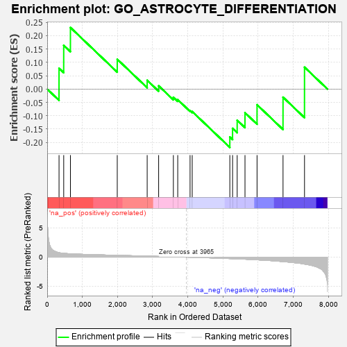
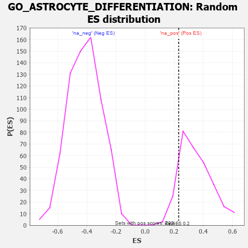

| | | Dataset | 7d |
| Phenotype | NoPhenotypeAvailable |
| Upregulated in class | na_pos |
| GeneSet | GO_ASTROCYTE_DIFFERENTIATION |
| Enrichment Score (ES) | 0.23063391 |
| Normalized Enrichment Score (NES) | 0.6607076 |
| Nominal p-value | 0.89041096 |
| FDR q-value | 0.9702647 |
| FWER p-Value | 1.0 |
Table: GSEA Results Summary

Fig 1: Enrichment plot: GO_ASTROCYTE_DIFFERENTIATION
Profile of the Running ES Score & Positions of GeneSet Members on the Rank Ordered List
| PROBE | GENE SYMBOL | GENE_TITLE | RANK IN GENE LIST | RANK METRIC SCORE | RUNNING ES | CORE ENRICHMENT | | 1 | DLL1 | | | 337 | 0.760 | 0.0780 | Yes |
| 2 | LRP1 | | | 470 | 0.648 | 0.1640 | Yes |
| 3 | HES5 | | | 661 | 0.571 | 0.2306 | Yes |
| 4 | ROR1 | | | 1993 | 0.306 | 0.1117 | No |
| 5 | NR2E1 | | | 2844 | 0.177 | 0.0329 | No |
| 6 | PAX6 | | | 3170 | 0.127 | 0.0121 | No |
| 7 | MAPK3 | | | 3589 | 0.062 | -0.0307 | No |
| 8 | NF1 | | | 3713 | 0.040 | -0.0398 | No |
| 9 | TAL1 | | | 4064 | -0.018 | -0.0809 | No |
| 10 | ABL1 | | | 4125 | -0.027 | -0.0842 | No |
| 11 | SMO | | | 5195 | -0.247 | -0.1796 | No |
| 12 | EPHA4 | | | 5273 | -0.265 | -0.1473 | No |
| 13 | SOX8 | | | 5404 | -0.296 | -0.1168 | No |
| 14 | ROR2 | | | 5626 | -0.353 | -0.0887 | No |
| 15 | TTBK1 | | | 5969 | -0.460 | -0.0588 | No |
| 16 | EGFR | | | 6708 | -0.765 | -0.0305 | No |
| 17 | GRN | | | 7319 | -1.194 | 0.0820 | No |
Table: GSEA details [plain text format]

Fig 2: GO_ASTROCYTE_DIFFERENTIATION: Random ES distribution
Gene set null distribution of ES for GO_ASTROCYTE_DIFFERENTIATION